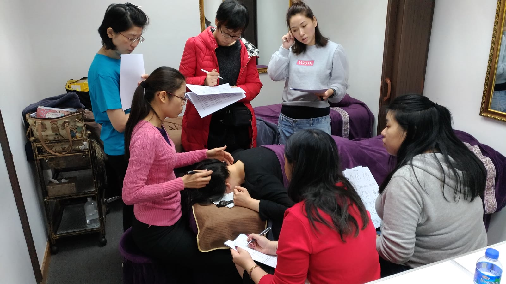

The Bojin Journal · Eyes
Screen-tired eyes by mid-afternoon? A 2-minute desk reset

Here's the honest short answer: when you stare at a screen for hours, you blink far less than usual, and the small muscles around your eyes stay quietly clenched all day. By mid-afternoon that whole band feels tight, heavy, and tired-looking. A short, well-placed reset right at your desk can soften that holding and help your eyes feel and look more awake — no mirror, no fuss, no leaving your chair.
Why do my eyes feel so tight and tired after a day on the screen?
It starts with blinking. When you're focused on a screen, you blink about half as often as you normally would. Blinking is what keeps the surface of your eyes comfortable and spreads a little moisture around, so blinking less leaves the eyes feeling dry, gritty, and strained.
At the same time, the tiny muscles that ring your eyes are working to hold your focus at one fixed distance for hours. They don't get much of a break. That steady, low-level effort is the tightness you feel building through the afternoon — around the brow bone, the temples, and just under the eyes.
Add in the fluid that tends to settle in this area when you've been still and staring, and the eyes can start to look puffy and heavy too. None of this means anything is wrong with you. It's simply what long screen hours ask of a very delicate part of your face.
How the Bojin Method helps tired, screen-strained eyes
First, what bojin actually is. If you already know gua sha, you have a head start — bojin grew from the same family of Chinese hands-on face care, so it will feel familiar. But it's its own deliberate method. What makes it work isn't how hard or soft you press. It's three things: the order you work in, the angle you hold the tool, and the exact spot you're working.
The traditional tool is a bojin stick — a slim, polished stainless steel tool shaped to follow the curves of your face, and you use its rounded edge. You can start with clean fingertips while you learn the moves, but the stick is what the method was built around. The pressure isn't the barely-there touch people assume, and it isn't forceful either. It's the right, comfortable pressure for you — firm enough to be felt, never enough to hurt or drag this thin skin.
If a tool you already own never seemed to do much here, it likely came with no method attached — no one showed you the order to follow, the angle to hold, or the exact place to work. Add that method, and the same couple of minutes feel completely different.
Around tired eyes, it's not about pressing harder or barely touching. It's the right, comfortable pressure, held at the right angle, worked in the right order and the right spot. That order, angle, and placement is the method.
The 2-minute desk-side eye reset
You can do this whole thing sitting at your desk, no mirror needed. Use the rounded edge of your bojin stick, or just clean fingertips. If you have a drop of eye cream or facial oil handy, dab a little on so nothing drags — but skip it if you're wearing eye makeup you'd rather not smudge. Work in order, follow the angle of the bone, and keep the pressure comfortable the whole way — not featherlight, not forceful.
- Warm and settle first. Close your eyes and rest your warmed palms lightly over them for three slow breaths. This softens the muscles before you touch anything and lets the tightest spots surface.
- Read your face first. With eyes closed, notice where the ache is strongest — brow, temples, or under the eyes. Wherever it's tightest is where you'll linger, and that sets the order you work in.
- Ease the brow bone. Rest the rounded edge or a fingertip just under the inner end of your eyebrow and glide slowly outward along the brow bone toward the temple. Keep the angle low against the bone and the pressure comfortable.
- Soften the under-eye and temple. Glide gently from the inner corner outward along the socket bone under your eye, staying on the bone and off the eyeball, then pause at the temple with small, steady circles.
- Finish down the sides of the neck. This is the step people skip. Sweep slowly from just below your ears down the sides of your neck a few times, giving the fluid a path to drain away instead of pooling back around your eyes.
What can I honestly expect?
Most women tell me their eyes feel lighter and less tight right after, and the area looks a little less puffy and more rested — like they've actually taken a breath. It's a lovely way to break up a long screen stretch, and it can help you feel calmer and a touch more awake heading into the rest of your afternoon. Done regularly, that small everyday lift at the mirror adds up.
Be clear-eyed about the limits, though. This soothes tension and tired-looking eyes — it is not a fix for your vision, and it won't remove fine lines or make under-eye shadows disappear. It's gentle self-care, not medical care. The best thing for screen strain is still to rest your eyes regularly and look far away now and then. And if your eye strain is persistent, or you have pain, sudden changes in vision, or anything one-sided, please see an eye doctor.
Two minutes, no mirror, right where you already sit. That's all this asks — a small, kind pause for eyes that have been working hard all day.
Quick answers
Can I do this without a mirror at my desk?
Yes — that's the whole idea. Once you know the order and the angle, your fingers or the stick find the brow bone and socket easily by feel. Closing your eyes actually helps you notice where the tension is.
Do I need a bojin stick, or can I use my fingertips?
You can absolutely start with clean fingertips or a smooth-edged tool you already own while you learn the moves. A bojin stick is the traditional tool the method was built around, but the real difference is working in the right order, at the right angle and spot, with a comfortable pressure.
Will this help my eyes actually see better after screen time?
No. It soothes the tight, tired feeling and can help your eyes look more rested, but it doesn't change your vision. For focus and strain, rest your eyes often, and see an eye doctor if strain keeps coming back.
How often can I do the desk reset?
As often as it feels good — once or twice through a long screen day is plenty for most people. Keep the pressure comfortable each time, and stop if your skin feels sensitive or anything is sore.
See the exact reset in 3 minutes
Watching it once makes it click. My free 3-minute video walks you through the whole desk-side reset — the order to follow, the angle to hold, and exactly where to work, so you can feel that right, comfortable pressure for yourself. Grab it and try it at your next screen break.
Watch the free 3-min videoYu-Ting Lan is a Taiwan-based international bojin instructor and the founder of Héhé Studio. She has taught her bojin method to close to a thousand students — from complete beginners to grandmothers — across Taiwan, Hong Kong, and Malaysia.